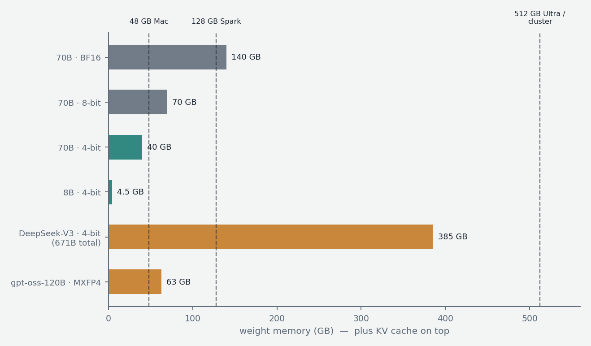
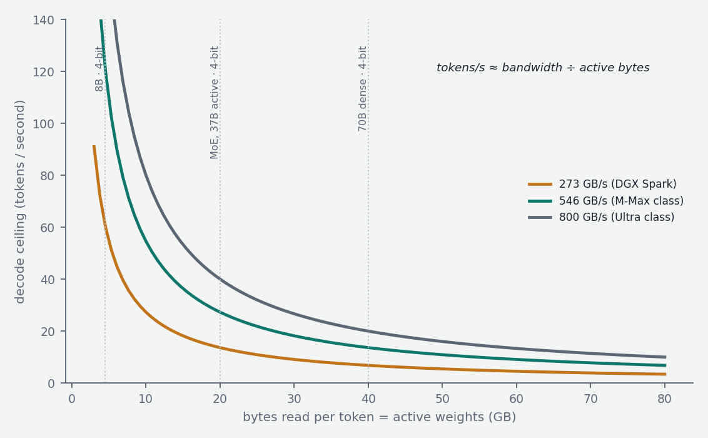

Everything so far has treated a model's parameters as abstract "numbers." This chapter is about their concrete representation in memory — how many bits each number occupies, how aggressively that can be shrunk, and the arithmetic that follows from it: whether a model fits on a given machine at all, and how many tokens per second it will generate once it does. For anyone running models on their own hardware, this is the chapter where the abstractions meet the purchase order.
Number formats
Computers store decimal numbers in floating-point formats, which split a fixed budget of bits into a sign, an exponent (setting the magnitude — how large or small the number can be), and a mantissa (setting the precision — how finely values are distinguished). The classical format is FP32: 32 bits (1 sign, 8 exponent, 23 mantissa), 4 bytes per number, precise to about 7 significant digits. Neural networks were trained in FP32 for years, but it is overkill — networks are noisy, redundant systems that don't need 7 digits of precision — and halving the bits doubles speed and halves memory.

The 16-bit formats split into two camps. FP16 (1/5/10) keeps good precision but has a cramped exponent: its maximum representable value is 65,504, and training computations occasionally exceed that, causing overflows. BF16 ("brain float," 1/8/7) makes the opposite trade: it keeps FP32's full 8-bit exponent — same enormous dynamic range — and sacrifices mantissa, keeping only about 2–3 significant digits. It turns out networks care far more about range than precision, so BF16 became the standard for training and full-quality inference: 2 bytes per parameter. The trend continues downward: FP8 formats are now used in parts of training (DeepSeek-V3 trained largely in FP8) and serving, and a 4-bit floating format, MXFP4 (a "microscaling" format where small blocks of values share a scaling factor), is the native format of OpenAI's gpt-oss weights.
The memory arithmetic is the first thing to internalize: weights occupy parameters × bytes-per-parameter. A 70B model is 140 GB at BF16, 70 GB at 8 bits, ~35–40 GB at 4 bits (plus a few GB of overhead and the KV cache, whose own arithmetic was covered in the attention-variants chapter). That last line is why 4-bit is the center of gravity of local inference: it is the difference between a 70B model being impossible and comfortable on a 48–64 GB machine.
Quantization: why it works and how it's done
Quantization is the conversion of trained weights from a high-precision format into a low-bit representation — typically integers. The basic scheme: take a group of weights, find their range, and map it linearly onto the available integer levels (16 levels for 4-bit), storing the integers plus one scale factor (and possibly a zero-point) per group. At inference the integers are scaled back to approximate values on the fly. Each weight thus carries a small rounding error.
Why doesn't this destroy the model? Because networks are massively redundant and noise-tolerant: each output is a sum over thousands of weight contributions, and independent rounding errors largely cancel rather than accumulate — the same statistical robustness that lets the model survive dropout and noisy training in the first place. The practical enemy is not the average weight but the outliers: large models develop a small number of weight channels and activation directions with values orders of magnitude larger than their neighbors, and these matter disproportionately. Naively scaling a group's range to accommodate one outlier crushes all its neighbors into a handful of integer levels. Essentially all modern quantization methodology is outlier management plus error budgeting:
GPTQ (2022) quantizes layer by layer, treating each layer as an optimization problem — choose the integer values that minimize the layer's output error on sample data, using second-order (curvature) information so that the rounding error of each weight is compensated by adjustments to weights not yet quantized. AWQ (activation-aware weight quantization, 2023) observes that a weight's importance is determined by the activations it multiplies — a mediocre weight applied to a huge activation matters more than a large weight applied to a tiny one — so it identifies the ~1% most salient channels from calibration data and protects them via rescaling before quantizing everything uniformly. The GGUF ecosystem (the file format of llama.cpp) offers a menu of k-quants (Q4_K_M, Q5_K_M, Q6_K and so on) using block-wise quantization with super-blocks, optionally guided by an importance matrix computed from calibration text; the suffix taxonomy is just points along the size-quality curve. All of these are post-training quantization (PTQ): applied to finished weights with at most a calibration pass, no retraining. The alternative, quantization-aware training (QAT) — training with quantization simulated in the loop so the network adapts to it — yields better low-bit quality but requires training-scale resources; it appears in vendor-released quantized variants (Gemma's QAT releases, gpt-oss's native MXFP4) rather than community quants.
The empirical quality curve is consistent across models and years: 8-bit is essentially lossless; 5–6 bit is indistinguishable in practice; 4-bit costs a small but usually acceptable amount (typically a fraction of a percent on benchmarks, a slight rise in perplexity); below 4 bits degradation accelerates, and 2-bit models are noticeably damaged. Two caveats deserve respect. Perplexity understates harm to specific capabilities — quantization damage concentrates unevenly, and long multi-step generations (reasoning chains, code) compound small errors in ways short-form evaluation misses, so reasoning-heavy use warrants more conservative quants. And weights are only one of the things quantizable: activations (for compute speed, the harder problem because of outliers) and the KV cache (8-bit KV is a common, nearly-free way to double usable context) are the other two.
The bandwidth arithmetic: what actually sets tokens per second
Now the most practically useful mental model in local inference. Generation has two phases with opposite characters (Chapter 7 builds on this distinction). Prefill — processing the prompt — handles all prompt tokens in parallel and is compute-bound: it saturates the chip's arithmetic units. Decode — generating tokens one at a time — is memory-bandwidth-bound: to produce each token, every (active) weight of the model must be read from memory once, and at batch size one the arithmetic per byte read is so trivial that the processor spends its time waiting on memory.

This yields a first-order formula worth memorizing: decode speed ≈ memory bandwidth ÷ bytes of active weights. A 70B dense model at 4-bit is ~40 GB of weights; on a machine with 273 GB/s of memory bandwidth (DGX Spark's LPDDR5x), that is a ceiling of about 6–7 tokens/second, regardless of how much compute the chip has. On an Apple Silicon Max-class chip with roughly half a terabyte per second of bandwidth, the same model tops out around 12–13 tokens/second; an Ultra-class chip at ~800 GB/s, around 20. Real systems achieve some fraction of the ceiling, but the formula reliably predicts the ranking and the rough magnitude — and it explains every major phenomenon of local inference: why quantization speeds up decoding (fewer bytes per token, not faster math), why MoE models decode like small models (only active parameters are read per token — DeepSeek-style 37B-active at 4-bit is ~20 GB read per token, twice the speed of a dense 70B on the same machine, despite 10× the total parameters), and why prefill and decode performance diverge across hardware: a compute-rich, bandwidth-poor machine like the Spark ingests long prompts quickly but generates slowly, while Macs are comparatively stronger at decode than prefill. For workloads that feed long documents in and want short answers out, prefill compute dominates; for chat and long generations, bandwidth is everything.
The runtime ecosystem
The software landscape sorts into a few lineages. llama.cpp is the foundational local engine: a C/C++ implementation running GGUF-quantized models on essentially anything — CPU, Apple Metal, CUDA, ROCm — with the broadest model and quant support; Ollama and LM Studio are friendlier wrappers around the same core. MLX is Apple's array framework with a strong LLM stack, often the fastest path on Apple Silicon and the natural base for Mac-cluster experiments (the EXO-style setups that shard a model across machines pool memory exactly as the MoE chapter described). vLLM and SGLang are server-class engines built for GPUs and concurrent users — the machinery of Chapter 7 — overkill for single-user chat but the right tool the moment an automated pipeline starts firing many parallel requests at a local endpoint. TensorRT-LLM is NVIDIA's maximally-optimized path for its own hardware. The practical decision tree is short: single user on a Mac → MLX or llama.cpp; mixed hardware → llama.cpp; many concurrent programmatic requests → vLLM or SGLang.
The picture to keep
Three numbers determine local inference. Bytes per parameter (the quantization level — 4-bit being the sweet spot where quality loss is small and memory halves twice over). Total weight bytes versus your memory capacity (whether the model fits, with MoE models demanding capacity for their total parameters). And active weight bytes versus your memory bandwidth (how fast it decodes). Quantization is mature, outlier-aware engineering, not lossy desperation — 8-bit is free, 4-bit nearly so — and the machines best suited to the current generation of large open models are precisely the big-capacity unified-memory systems whose modest bandwidth MoE architectures were, in effect, designed to forgive.